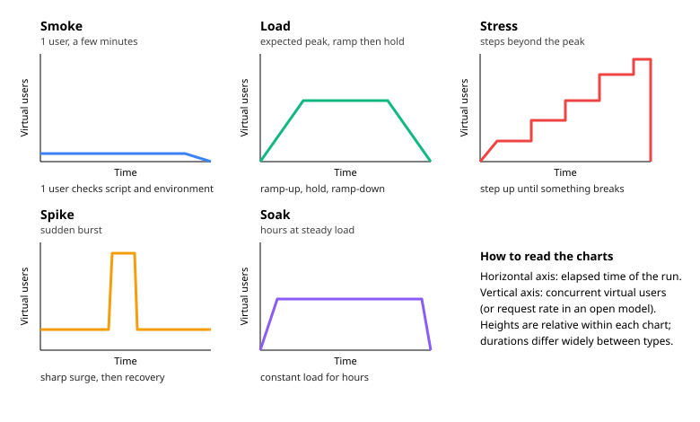

Performance Testing Fundamentals
|
This content was generated with the assistance of AI and should be verified against the official documentation before being relied on in production. |
This page was written against Apache JMeter 5.6.3, the latest release on 2026-10-14 (Java 8 or later, Java 17 or later
recommended; the examples assume Java 17 or 21). JMeter 6.0 is not released: the changes planned for it on the
apache/jmeter master branch (it needs Java 17 or later) are mentioned only where they touch a concept on this page,
and are described as planned, not as released behaviour. Plugin-based examples use the JMeter Plugins Manager 2.0 from
jmeter-plugins.org. The page is tool-agnostic in its first half, then maps every idea to a JMeter element.
Most of the methodology comes from three books written for much older JMeter versions: Bayo Erinle, JMeter Cookbook (2014, JMeter 2.11), Bayo Erinle, Performance Testing with JMeter (2nd edition, 2015, JMeter 2.12; abbreviated PTwJ) and Sai Matam and Jagdeep Jain, Pro Apache JMeter (2017, JMeter 3.0; abbreviated Pro). The concepts have aged well; the tooling has not. The official manual says little about methodology (its load-testing introduction is a short checklist), so the concepts are taken from the books by chapter and then checked against what current JMeter offers. Where the manual states something, such as the coordinated omission warning, the source is cited. The official documentation does not spell out Little’s Law, percentile statistics or workload modelling, so those sections are explanations, not quotations; the one formula that does appear in the JMeter ecosystem (the Throughput Shaping Timer wiki’s thread pool formula) is cited where it is used.
The running example is the Bookshelf API introduced in the section overview. The
journey is: log in, search, view a book, create a loan, view the loan. For background on what JMeter is, how its
threads work and what it cannot do, see Introduction &
Architecture; for installation see Installation &
Configuration; for how a plan is built and run see
GUI & Test Plan Workflow, and for how elements combine see
Test Plan Elements, Execution Order &
Scoping. Variables and functions such as ${__P(threads,10)} are covered in
Properties, Variables & Functions.
What performance testing is for
A functional test asks whether the answer is right. A performance test asks how quickly, how often and for how many users at the same time the system answers, and what happens when it is pushed past what it was designed for. The result is not a pass or fail on one request but a set of measurements (see Performance criteria) compared with a target. Pro chapter 2 frames the same point as choosing a test type from the question you need answered, which is why the next section starts from the types.
Performance testing finds a different class of defect than unit tests: thread-pool exhaustion, connection-pool limits, lock contention, slow queries that only hurt under concurrency, memory leaks, cache stampedes, undersized instances and timeouts that cascade. It cannot prove the absence of defects, and a protocol-level tool such as JMeter does not measure what a browser feels. The JMeter manual states that JMeter is not a browser: it does not run JavaScript or render pages, so front-end performance (rendering, bundle size, Core Web Vitals) needs a browser-driven tool, covered by the Playwright, Cypress and Selenium section (see Choosing a Tool).
Test types
The books use slightly different taxonomies (Pro chapter 2 lists the types and their goals; PTwJ chapter 1 contrasts load and stress testing). They agree on the five below, plus two that describe a goal rather than a shape.
| Type | Question it answers | Typical shape | When to run it |
|---|---|---|---|
Smoke |
Does the script work, and is the environment reachable and correctly configured? |
One or a few users, one or a few iterations, a few minutes at most |
After every script change, before any larger run |
Load |
Does the system meet its targets at the expected (average and peak) load? |
Ramp-up to the expected number of users or arrival rate, hold for 10 to 60 minutes, ramp-down |
Before a release, on a schedule, and in CI against a stable environment |
Stress |
Where does it break, and how does it fail and recover? |
Load increased in steps beyond the expected peak until errors or saturation |
Before capacity planning; to learn the failure mode |
Spike |
Does it survive and recover from a sudden surge? |
Low load, an abrupt jump (seconds), a short hold, an abrupt drop |
Before a marketing event, a release announcement or a cache flush |
Soak (endurance) |
Does it stay healthy over hours or days? |
Moderate constant load for a long time |
To expose memory leaks, connection leaks, log or disk growth, scheduled jobs, certificate or token expiry |
Capacity |
How much load can it carry while still meeting its criteria? |
Stepwise increase, stopping at the last step that meets the criteria |
To size hardware and set autoscaling limits |
Scalability |
Does adding resources add proportional capacity? |
The same load test repeated with 1, 2, 4 instances (or cores) |
When choosing between scaling up and out |
The manual’s load-testing introduction suggests a similar escalation: start with a low-volume test, then a benchmark with average users, then a test at maximum users, then a destructive test to find the hard limit. Capacity and scalability tests are not different test plans; they are the same plan analysed differently, and the second needs the environment to be changed between runs.

The figure shows relative shapes only. A smoke test lasts minutes, a load test an hour, a stress test as long as it takes to reach the limit, and a soak test many hours.
Performance criteria
Four families of measurements describe a run. Pro chapter 2 and PTwJ chapter 1 discuss them as the basis for acceptance criteria.
| Measure | Meaning | Pitfalls |
|---|---|---|
Response time |
Time from sending a request to receiving the response. In JMeter this is the sample’s elapsed time. Report percentiles, not just the mean (see Percentiles versus averages). |
The test client’s own overload inflates it; response time measured at the client includes network and the client’s queueing |
Throughput |
Completed requests (or transactions) per unit time, for example requests per second. |
Throughput is an output of a closed-model test and an input of an open-model test (see Closed versus open workload models) |
Utilisation |
CPU, memory, disk, network and connection-pool use on the server, the database and the load generators. Pro chapter 2 recommends keeping utilisation at about 80 percent or below at the target load. |
Server metrics must be collected separately; JMeter itself measures only what the client sees. Monitor the load generators too |
Error rate |
Percentage of failed samples: HTTP errors, timeouts, failed assertions, connection resets. |
A fast error is still an error; a run with a 30 percent error rate has meaningless response times for the successful 70 percent |
A fifth quantity is concurrency: how many users are active at once. It is both an input (how many threads you start) and an outcome (how many requests are in flight on the server), and Little’s Law ties it to throughput and response time.
Requirements, goals, SLAs and SLOs
Pro chapter 2 distinguishes requirements, which are mandatory limits, from goals, which are desirable targets. The distinction matters because it decides what a failed run means.
-
Requirement: a limit the system must not cross, usually backed by a contract. Example: 95 percent of
GET /api/books?query=requests complete in 800 ms or less at 100 requests per second. -
Goal: a target to aim for that produces no failure when missed. Example: median search time under 200 ms.
-
SLA (service-level agreement): the contractual commitment to customers, with consequences for missing it.
-
SLO (service-level objective): the internal target, normally stricter than the SLA so that there is a margin before the contract is breached.
-
Acceptance criteria: the concrete, testable form of requirements for one test, for example "at 50 concurrent users for 10 minutes: error rate under 1 percent, 95th percentile under 800 ms, server CPU under 80 percent".
PTwJ chapter 1 recommends writing acceptance criteria before testing, because without them a test only produces numbers. A useful criterion names the load (users or rate), the duration, the measure (percentile, not just average), the threshold and the environment.
Criteria can be enforced during a JMeter run: a Duration Assertion fails a sample slower than a limit, and a Response Assertion checks the content. The assertions page of this section covers them. The dashboard’s APDEX table (see APDEX) and its percentile columns give the verdict afterwards.
The test lifecycle
PTwJ chapter 1 describes performance testing as a cycle of testing and tuning, and Pro chapter 2 expands it into a strategy document. The shape is the same in both: plan, build, check, run, analyse, change, repeat.
The steps in practice:
-
Goals and criteria. Write down what success means before touching a tool (see the previous section).
-
Workload model. Decide which journeys run, in what proportions and at what load (see Workload modelling).
-
Script. Build the plan with realistic requests, data and think time.
-
Validate at light load. Run one user for one iteration with a View Results Tree attached, then a handful of users. Check that every request does what the user would do (correct status, correct content, no hidden redirects to a login page). In JMeter this is the smoke test. The Thread Group’s Validate option and the View Results Tree exist for this step; the GUI is for building and debugging only, and real load goes through CLI mode.
-
Baseline. Run the expected load once on an unchanged system and keep the result. A baseline is the reference every later run is compared against; without it, "slower" has no meaning.
-
Execute the load, stress, spike and soak tests that the plan calls for.
-
Analyse the client-side results together with server metrics (CPU, heap, GC, pool usage, slow queries).
-
Tune and retest. Change one variable at a time, then repeat the same test under the same conditions. If two things change together, the improvement cannot be attributed. PTwJ chapter 1 calls this the test-tune loop.
Two disciplines make the cycle trustworthy. First, repeatability: keep the plan, data set, environment and warm-up the same between runs and record the JMeter version, JVM and properties used. Second, run-to-run variance: repeat a run at least once before believing a small difference, because garbage collection, caches and noisy neighbours move the numbers.
The test environment
Pro chapter 2 treats environment and data as part of the strategy. The points that matter most:
-
Environment parity. Results are meaningful only if the system under test resembles production in hardware class, instance count, configuration, JVM settings, database size and indexes, and network topology. A smaller environment can still be used for comparisons between runs; do not extrapolate its absolute numbers to production by simple multiplication.
-
Isolation. Other traffic on the same system (another team’s test, a nightly batch, backups) corrupts results. Agree a window and stop competing workloads. The manual also advises choosing a time that limits disruption, since the test may crash servers.
-
Load generators. Run them close to the target on the network side if you want to measure the server and not the network, from a representative place if you want to include it. The manual suggests checking reachability and latency with ping and traceroute, and resolving the target’s address beforehand to avoid DNS lookup overhead during the test. A generator that is itself saturated (CPU, heap, sockets) produces false slowness; sizing and tuning generators is covered later in this section.
-
Test data. Realistic volume and variety: enough users, books and loans that caches do not hide the cost of queries, and unique credentials per virtual user where the application keeps per-user state. Data must be reset or regenerated between runs so that run 2 does not start with run 1’s leftovers. Pro chapter 11 stresses test data as a workload-modelling input.
-
Third parties. Payment gateways, e-mail providers and partner APIs should be replaced by mocks or stubs that imitate their latency, since you should not load test systems you do not own (see the section on responsible load testing, planned later in this guide) and their variability masks your own. Pro chapter 11 recommends mocking third-party services.
-
Observability. Make sure server-side metrics are collected during the run: JMeter only sees the client side.
Workload modelling
A workload model says who does what, how often and how many at a time. Pro chapter 11 describes deriving it from production data; the method is original to the books because the JMeter manual has no equivalent chapter.
-
Collect real usage. Web server or gateway access logs, application analytics or APM data for a representative period that includes a peak.
-
Classify requests into business transactions (journeys), for example Browse, Search, Borrow, Return.
-
Compute the mix. Count each transaction, divide by the total and express it as percentages.
-
Find the target load. Take the peak hour, not the daily average: peak requests per second, peak concurrent users and the arrival rate of new sessions.
-
Pick the parameters of each journey: number of steps, think time between them and the data it needs.
-
Decide the load model. Fixed users (closed) or arrival rate (open), see the next section.
An example for Bookshelf. Suppose the peak hour of an access log contains 36000 journeys, from which the analysis shows:
| Journey | Share | Journeys per hour | Requests per journey |
|---|---|---|---|
Search and view a book |
70 percent |
25200 |
2 (search, view) |
Borrow a book (login, search, view, create loan, view loan) |
20 percent |
7200 |
5 |
Check an existing loan |
10 percent |
3600 |
2 (login, view loan) |
The mix is 36000 journeys per hour, which is 10 per second. The requests per second are 10 x (0.7 x 2 + 0.2 x 5 + 0.1 x 2) = 10 x 2.6 = 26 requests per second at peak. A test at the "expected peak" therefore needs a throughput of about 26 requests per second, not 26 users: the number of users depends on response and think time (see Little’s Law).
Expressing the mix in JMeter
The simplest way to run a weighted mix is a Throughput Controller set to Percent Executions inside a single Thread Group, or a Random Controller or Switch Controller driven by a variable. The other approach is one Thread Group per journey, with thread counts in the proportion of the mix. The first keeps one pool of users; the second lets each journey have its own think time and ramp-up. In the GUI: select the Thread Group, then Add, Logic Controller, Throughput Controller, set Execution style to Percent Executions, enter 70 in Throughput and put the search and view samplers under it; repeat with 20 and 10 for the other journeys.
The logic-controllers page of this section gives the complete controller fields, including how Percent Executions interacts with the thread count and the per-user option; check them there before using percentages for small iteration counts, because a percentage is only approached over many iterations.
Closed versus open workload models
This is the most consequential modelling decision, and one the books do not draw because the JMeter of their time only had the first model.
-
Closed model. A fixed population of users. Each user sends a request, waits for the response, thinks, then sends the next one. The next request cannot start until the previous one has finished. JMeter’s classic Thread Group is a closed model: the number of threads is the population. If the server slows down, every thread waits longer and the request rate falls. Closed models fit systems with a bounded set of users, such as an internal tool used by 200 employees, or a batch client pool.
-
Open model. Users arrive at a rate that does not depend on how fast the system responds, as people do on a public website. If the server slows down, requests keep arriving and work piles up, concurrency grows and the system can collapse. The open model fits public-facing services where arrivals are independent. The JMeter manual describes the Open Model Thread Group (added in 5.5, experimental) as defining a pool of users that executes the test according to a schedule, and says the Precise Throughput Timer in many cases is better replaced by it.
| Aspect | Closed model (Thread Group) | Open model (Open Model Thread Group) |
|---|---|---|
You set |
Number of users (threads) |
Arrival rate of requests |
Throughput is |
An output: depends on response time |
An input: your schedule |
Server slows down |
Request rate drops, hiding the problem |
Backlog grows, exposing the problem |
Natural fit |
Fixed user population |
Public traffic with independent arrivals |
Typical risk |
Understated load and coordinated omission (see Coordinated omission) |
Needs enough threads to absorb the backlog, otherwise it degrades to the closed model |
JMeter supports both: the Thread Group and the Concurrency Thread Group plugin are closed (the second varies the number of active threads over time), the Open Model Thread Group and the Arrivals Thread Group plugin are open, and the Precise Throughput Timer and Throughput Shaping Timer bolt a target throughput onto a closed model. Many real systems mix the two: a closed population of users, each of whom arrives as part of an open stream. Choose by asking whether the rate or the population is the thing you know.
A schedule in the Open Model Thread Group is a sequence of commands. The manual lists rate(...), random_arrivals(...)
and pause(...); the time units are ms, sec, min, hour and day, and the unit may be omitted for rate(0). The manual’s
own examples are:
rate(10/sec) random_arrivals(1 min) rate(10/sec)
rate(0) random_arrivals(1 min) rate(10/sec) random_arrivals(1 min) rate(10/sec) random_arrivals(1 min) rate(0)
rate(10) random_arrivals(1 min) pause(2 sec) random_arrivals(1 min)The first is a constant 10 requests per second for one minute; the second ramps from 0 to 10, holds for a minute and ramps back down; the third pauses for two seconds in the middle of a constant rate.
In JMeter 6.0 the delays of the Open Model Thread Group and the Precise Throughput Timer are planned to be measured from
the Thread Group start (per changes.xml on master); that is planned behaviour, not released.
Little’s Law
Little’s Law is a result from queueing theory: in a stable system, the average number of items inside the system equals the arrival rate multiplied by the average time each item spends in it. The JMeter manual does not state it. Applied to a closed-model test it becomes:
where \(N\) is the number of concurrent users (threads), \(X\) the throughput in requests per second, \(R\) the average response time in seconds and \(Z\) the average think time between requests in seconds. Turned around, a Thread Group of \(N\) users produces \(X = N / (R + Z)\). The law holds for averages in steady state; it says nothing about the distribution, and it does not hold during ramp-up, saturation or after errors change the cycle time.
Worked numbers for Bookshelf
Each virtual user sends a request, waits for the response (R = 0.2 s on average) and thinks for Z = 3 s before the next request.
| Question | Calculation | Result |
|---|---|---|
Cycle time of one user |
R + Z = 0.2 + 3 |
3.2 s per request |
Throughput of one user |
1 / 3.2 |
0.3125 requests per second |
Throughput of 50 users |
50 / 3.2 |
15.6 requests per second |
Users needed for 26 requests per second |
26 x 3.2 = 83.2 |
84 users (rounded up) |
Users needed for 100 requests per second |
100 x 3.2 |
320 users |
Same 100 requests per second with no think time |
100 x 0.2 |
20 users |
Two practical consequences follow. First, think time dominates the user count: the same throughput needs 16 times as many threads with a 3 s think time as with none. Removing think time to make a plan "go faster" tests a different, unrealistic, workload that needs far fewer threads for the same load, and one thread per request in flight then hits the server much harder per user than real users do. Second, when response time grows, the throughput of a closed model falls: if R rises from 0.2 s to 2 s with the same 50 users, X falls from 15.6 to 50 / 5 = 10 requests per second, and the system is being asked to do less work precisely when it is struggling.
For an open model, the same law sizes the pool of threads that executes the arrivals. The Throughput Shaping Timer wiki gives the formula for the thread pool size as the target rate multiplied by the maximum response time in milliseconds divided by 1000. With the 26 requests per second above and a maximum response time of 800 ms, that is 26 x 800 / 1000 = 20.8, so at least 21 threads, plus a margin. The wiki warns that too many surplus threads can cause a final spike. The Throughput Shaping Timer wiki’s own example is 1230 requests per second and a 2.5 s response time, which needs 3075 threads.
The inputs are averages measured at light load. They change under load, so after the first run replace the estimates with the measured throughput and response time and recompute.
Percentiles versus averages
The average (mean) response time hides the slow tail, and the slow tail is what users remember. A response time distribution is usually skewed: most requests are fast and a few are very slow.
A concrete example: 100 requests, of which 95 take 100 ms and 5 take 3000 ms.
-
Mean: (95 x 100 + 5 x 3000) / 100 = 245 ms. This looks acceptable.
-
Median (50th percentile): 100 ms.
-
95th percentile: 100 ms (the 95th request in sorted order is still a fast one).
-
99th percentile: 3000 ms. One in twenty users waited 3 s.
Both the mean and the 95th percentile look fine, and only the 99th percentile shows the problem. The lesson is to report several percentiles together with the maximum and the error rate, and to choose the percentile that matches the requirement (95th or 99th for user-facing latency, 99.9th for strict services). Percentiles cannot be averaged across runs or across load generators; compute them from the raw samples.
The JMeter HTML dashboard reports three configurable percentiles. The manual gives their properties and defaults:
jmeter.reportgenerator.aggregate_rpt_pct1=90
jmeter.reportgenerator.aggregate_rpt_pct2=95
jmeter.reportgenerator.aggregate_rpt_pct3=99
jmeter.reportgenerator.statistic_window=20000jmeter.reportgenerator.statistic_window sets the sliding-window size used to evaluate percentiles (default 20000,
larger is more accurate and uses more memory). The manual also notes that dashboard percentiles can differ from the GUI
Aggregate Report, and that setting the (unprefixed) property backend_metrics_percentile_estimator=R_3 brings them
closer. Set these in user.properties or with -J on the command line, never by editing jmeter.properties.
APDEX
APDEX (Application Performance Index) condenses response times into one number between 0 and 1. Each sample is classified as satisfied (fast enough), tolerating (slow but acceptable) or frustrated (too slow). The standard formula, from the APDEX specification that the JMeter manual links, is:
JMeter’s dashboard computes it per transaction. It has two thresholds: a sample at or under the satisfied threshold is satisfied, one at or under the tolerated threshold is tolerating, and a slower one is frustrated. The properties and their defaults are:
# thresholds in milliseconds
jmeter.reportgenerator.apdex_satisfied_threshold=500
jmeter.reportgenerator.apdex_tolerated_threshold=1500
# per-transaction overrides: name:satisfied|tolerated, entries separated by ;
jmeter.reportgenerator.apdex_per_transaction=Search:300|1000;Create loan:800|2500The first two lines state the documented defaults. The override format (sample_name:satisfaction|tolerance, separated
by ;, values in milliseconds, names may be regular expressions) comes from the manual; the transaction names here are
illustrative. The manual does not state the formula itself and refers to the APDEX article for it, which is why the
formula above is attributed to the APDEX definition rather than quoted from the JMeter page.
Worked example with the defaults: of 100 samples, 80 take 500 ms or less, 15 take 501 to 1500 ms and 5 are slower. Apdex = (80 + 15 / 2) / 100 = 0.875. A rule of thumb used with APDEX is that values near 1 are good, but the scale and its qualitative labels are conventions, not JMeter features; thresholds should be derived from your own requirements (see Requirements, goals, SLAs and SLOs), not left at the defaults.
APDEX is a coarse summary. Use it as a headline next to percentiles, never instead of them.
Coordinated omission
Coordinated omission is a measurement bias that makes load tests look better than reality. It happens when a load generator that waits for a response before sending the next request (a closed model) stops generating load exactly while the system is slow. A stall of 10 seconds then contributes one slow sample instead of the ten seconds of requests that real users would have issued and experienced as slow, so the tail latency is understated.
The JMeter manual mentions the problem once, in its best-practices page, under the advice to use the correct number of threads: if you do not size the number of threads correctly you will face the "Coordinated Omission" problem, which can give wrong or inaccurate results. The page does not give a remedy beyond sizing the thread count and spreading very large tests over several machines in distributed mode. The practical measures below are consequences of the model description above, not statements by the manual:
-
Prefer an open model (Open Model Thread Group, Arrivals Thread Group) when the real traffic is open, and make sure there are enough threads to absorb the backlog (see the thread pool formula in Little’s Law).
-
Watch for evidence in the results: a throughput curve that drops exactly when response times rise suggests a closed model that has throttled itself.
-
Size the thread count from Little’s Law with headroom, and check that the load generator itself is not saturated.
-
Interpret the percentiles of a closed-model run as the experience of the users in the model, not of all arriving traffic.
Source: Best Practices (User Manual)
The best-practices page also covers other points relevant here: it advises GUI mode only for building and debugging, and notes that a very large total number of threads is possible provided that not too many are active concurrently because thread creation can be delayed until a thread starts sampling.
Mapping test types to JMeter elements
Each test type is a particular load shape, and JMeter offers an element for each. The Bookshelf plan bookshelf-load.jmx
is reused for all of them; only the load driver changes. The figures are chosen to be easy to reason about and are
worked through with Little’s Law.
| Test type | JMeter element | Bookshelf configuration |
|---|---|---|
Smoke |
Thread Group |
1 thread, 1 loop, with View Results Tree attached while building. Core JMeter. |
Load |
Thread Group with ramp-up and a scheduler duration |
50 threads, 60 s ramp-up, duration 660 s (the scheduler duration includes the ramp-up, so this holds full load for 10 minutes). Core JMeter. The ramp-up adds 50 / 60 = 0.83 threads per second. |
Stress |
Concurrency Thread Group (plugin |
Steps of 25 users up to saturation. Closed model, plugin. |
Spike |
Synchronizing Timer, or Ultimate Thread Group (plugin), or Open Model Thread Group |
Release 200 threads at once, or an arrival rate that jumps from 5 to 100 per second and back. |
Soak |
Thread Group or Open Model Thread Group with a long duration |
A constant |
Arrival rate (open) |
Open Model Thread Group |
|
The sections below show the minimum needed to configure each shape. The detailed fields of the thread groups, the open model and the timers have their own pages later in this section (thread groups and ramp-up, the open model and throughput control, timers and think time, custom thread groups and load shaping).
Smoke and load with the Thread Group
Menu path: right-click Test Plan, Add, Threads (Users), Thread Group. For the load test, set the fields in the table; for the smoke test, set one thread and one loop.
| Field | Load test | Smoke test |
|---|---|---|
Number of Threads (users) |
50 |
1 |
Ramp-up period (seconds) |
60 |
1 |
Loop Count |
Infinite, with Duration |
1 |
Specify Thread lifetime, Duration (seconds) |
660 |
not used |
Startup delay (seconds) |
0 |
0 |
Worked numbers: a 60 s ramp-up of 50 threads starts 50 / 60 = 0.83 threads per second, or one new thread every 1.2 s.
With R = 0.2 s and Z = 3 s each thread produces 0.3125 requests per second, so at full load the plan generates about
15.6 requests per second, the figure from Little’s Law. Over the 600 s hold that follows the ramp-up this is roughly 9400 requests; the exact
count depends on the journey length and how many iterations finish. The same plan with -Jthreads=1 is the smoke test
if the Thread Group reads its fields from properties:
jmeter -n -t bookshelf-load.jmx -l smoke.jtl -Jthreads=1 -Jrampup=1 -Jduration=60This requires the plan’s Thread Group fields to use ${__P(threads,50)}, ${__P(rampup,60)} and
${__P(duration,660)}. The command-line flags -n, -t, -l and -J are listed in the manual; the summariser
lines printed at the end of the run are produced by JMeter itself. The CLI page of this section shows the complete
options and output.
Stress with a stepped load
Core JMeter has no stepped thread group. The Concurrency Thread Group from the jmeter-plugins.org catalogue (installed
with the Plugins Manager, plugin id jpgc-casutg) varies the number of active threads according to a schedule, and its
Throughput Shaping Timer companion can drive a target rate. The alternative in core JMeter is the Open Model Thread
Group, with a schedule that climbs past the expected peak:
rate(5/sec) random_arrivals(5 min) rate(20/sec) random_arrivals(5 min) rate(40/sec) random_arrivals(5 min) rate(80/sec)This schedule increases the arrival rate linearly from 5 to 20, then to 40, then to 80 requests per second, five minutes per leg. The stress test ends when error rate or response time breaches the criteria: the rate at the last healthy point is the system’s capacity for that journey mix. Because the open model keeps sending work as the server degrades, the failure shows up as a growing backlog and errors, which is the information a stress test is for.
Spike with the Synchronizing Timer
The manual describes the Synchronizing Timer as blocking threads until a given number of threads are waiting and then releasing them all at once, which creates large instant loads at various points of the test plan. Menu path: in the Thread Group (or on the sampler to be synchronised), Add, Timer, Synchronizing Timer.
| Field | Description (from the manual) |
|---|---|
Number of Simultaneous Users to Group by |
Number of threads to release at once; 0 is equivalent to the number of threads in the Thread Group. Required. |
Timeout in milliseconds |
0 waits until the group is full; above 0 waits at most that long, then releases whoever has arrived. Default 0. |
For a 200-thread spike set the group size to 200. Keep the timeout non-zero: the manual warns that with a timeout of 0 the test pauses forever if the group never fills, and only a forced stop ends it. The manual also states that the timer blocks only within one JVM, so in distributed testing the group size must not exceed the threads of a single generator. The timer gives a burst of simultaneous requests at one point; for a spike that is repeated and shaped over time use the Ultimate Thread Group plugin (jmeter-plugins.org) or an Open Model Thread Group schedule with an abrupt jump in rate.
Soak with a constant open rate
A soak test is a load test whose duration is the variable. The soak driver should be the simplest and most stable configuration, since you are looking for slow drift and not for the effect of a changing load. For hours of steady load use the Open Model Thread Group with a constant rate and a long schedule, for instance:
rate(0) random_arrivals(2 min) rate(5/sec) random_arrivals(8 hour) rate(5/sec) random_arrivals(2 min) rate(0)The first and last legs ramp up and down; the long leg holds 5 requests per second for eight hours, about 5 x 3600 x 8 = 144000 requests. A soak run needs result handling that does not itself grow without bound: write results to a file in CLI mode with no GUI listeners and keep the saved fields minimal, and monitor the load generator’s heap as well as the server’s. The manual’s advice to use CLI mode applies even more here. What to watch on the server: heap after garbage collection trending upwards, open file or connection counts, disk growth, thread counts and response times that creep up over hours.
Capacity and scalability
These reuse the stress or load test. For capacity, record the highest load at which the acceptance criteria still hold (for example the 50-user load test passes but the 75-user test breaches the 95th percentile). For scalability, repeat the same test at 1, 2 and 4 server instances and compare the sustainable throughput: close to linear growth means the system scales, flattening means a shared bottleneck such as the database. Both depend more on the test environment discipline described earlier than on any JMeter element.
Pitfalls
-
No acceptance criteria. A run with no target produces numbers that cannot be judged.
-
Changing several things between runs. The effect of each cannot be separated.
-
Testing from the GUI. The manual states that GUI mode should only be used for creating and debugging the script; run load in CLI mode.
-
Tiny or reused test data. Every virtual user logs in as the same account or searches for the same term, and the cache makes the system look much faster than it is.
-
Ignoring think time (or making it zero) so that a few threads create unrealistic per-user pressure; or adding so much that thousands of threads are needed.
-
Saturated load generator. If the generator’s CPU or heap is exhausted, response times measure the generator. Check its utilisation during every run.
-
Reporting averages only. See Percentiles versus averages.
-
Ramp-up too short. All users start at once, which is an accidental spike, not a load test.
-
Measuring warm-up. The first minutes include JIT compilation, empty caches and connection setup; exclude them from the analysis window or run a warm-up phase.
-
Testing someone else’s system without permission. Aim load only at localhost or systems you own.
From the books to the current JMeter
| Book concept (chapter) | Current state |
|---|---|
Test types, requirements and goals, strategy document, 80 percent utilisation (Pro ch. 2) |
Concepts unchanged; the official manual covers them only lightly (load-testing introduction and best-practices). Open versus closed models and coordinated omission are added in this page. |
Acceptance criteria, baselines, load versus stress, test and tune loop (PTwJ ch. 1) |
Unchanged. Assertions and the HTML dashboard automate part of the verdict. |
Workload modelling from access logs, use-case mix, test data, mocked third parties (Pro ch. 11) |
Not in the manual. Implement with Throughput, Random or Switch controllers and CSV data. |
Stepped and ultimate thread groups (Cookbook ch. 6) |
Still available as plugins; the Concurrency and Arrivals thread groups replace the Stepping Thread Group, and core JMeter has the Open Model Thread Group (5.5) and the Precise Throughput Timer. |
JMeter 2.x and 3.0 GUI listeners for graphs |
Superseded by the HTML dashboard and its percentiles and APDEX tables. |
JMeter 6.0 (planned) |
Open Model Thread Group and Precise Throughput Timer delays measured from the Thread Group start; Java 17 or later required. |
References
-
Help! My boss wants me to load test our application! (Apache JMeter User Manual): the escalation from low volume to destructive testing, the test environment checklist.
-
Best Practices (Apache JMeter User Manual): the coordinated omission warning, thread sizing, CLI mode.
-
Component Reference (Apache JMeter User Manual): Thread Group, Open Model Thread Group, Synchronizing Timer, Throughput Controller, Precise Throughput Timer.
-
Generating Report Dashboard (Apache JMeter User Manual): percentile and APDEX properties.
-
Apache JMeter changes: release history. Planned 6.0 changes are listed in
xdocs/changes.xmlon the apache/jmeter master branch. -
Throughput Shaping Timer (JMeter Plugins): the thread pool size formula.
-
Concurrency Thread Group (JMeter Plugins) and Ultimate Thread Group (JMeter Plugins).
-
Bayo Erinle, JMeter Cookbook, Packt, 2014: chapter 6 (Ultimate and Stepping Thread Groups, Throughput Shaping Timer).
-
Bayo Erinle, Performance Testing with JMeter, 2nd edition, Packt, 2015: chapter 1 (acceptance criteria, baselines, load versus stress, the test and tune loop).
-
Sai Matam and Jagdeep Jain, Pro Apache JMeter: Web Application Performance Testing, Apress, 2017: chapter 2 (test types, requirements versus goals, strategy, utilisation) and chapter 11 (workload modelling, test data, mocked third parties).